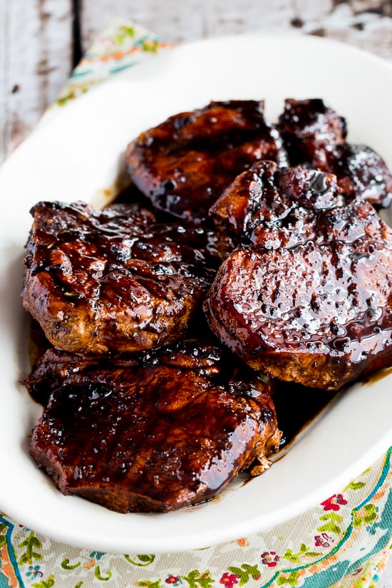

Here’s something to jazz up your midweek meals – Balsamic Pork Chops!! Seared to perfection with a gorgeous thick golden crust, and served with a balsamic glaze that is tangy and sweet – but not too sweet.
The balsamic reduction in this recipe is a great one to add to your arsenal because it is a secret weapon for wickedly delicious super fast meals (GREAT with chicken!). Use as a drizzle to fancy things up – just like restaurants do!
Pat pork chops dry with paper towels, and season with salt and pepper.
Melt butter in a large, nonstick skillet over medium heat. Add olive oil and stir to combine.
When butter and oil shimmer, carefully add chops and cook over medium heat until browned on one side, 5 to 6 minutes. Turn and cook pork chops until no longer pink in the center and browned on the other side, 3 to 4 minutes. Do not overcook the chops or they will turn dry and hard. An instant-read thermometer inserted into the center should read 145 degrees F (63 degrees C).
Remove pork chops from heat and cover to keep warm.
Combine chicken broth, balsamic vinegar, and honey in a small saucepan. Bring glaze to a boil over medium-high heat and boil until mixture is reduced to 1/2 cup, 5 to 6 minutes.
Drizzle pan-fried chops with balsamic glaze and serve warm.